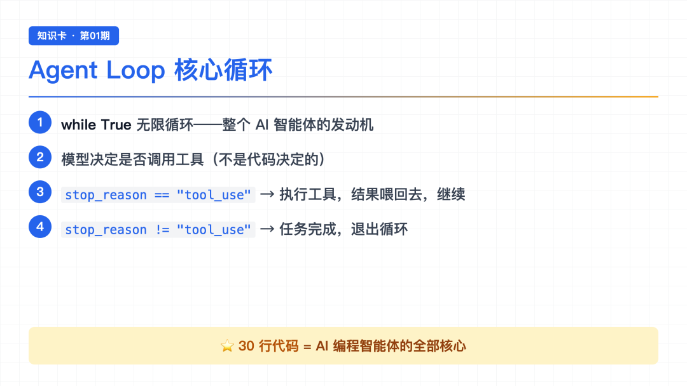

大家好，我是郑同学。
最近一直在用 AI 编程工具写代码——Claude Code、Cursor 这些。用着用着就好奇：这些看起来无所不能的 AI 助手，核心原理到底是什么？
不是看文档那种了解，是真想把源码跑起来、改一改、看看它到底怎么工作的。
所以花时间把 Claude Code 的核心机制拆了一遍。整个系列 20 章，每章跑 demo、看日志、拆原理。今天第 1 篇。
● ● ●
可能有人会问：我只是一个用 AI 工具的人，又不是开发框架的，学这些有什么用？
三个原因：
第一，用得明白。 你知道 AI 助手每次"思考"时在做什么，就知道什么时候该相信它，什么时候要检查。用 AI 写代码不是黑箱赌运气。
第二，能调能改。 想给 AI 加个自定义工具？想限制它的权限？想做自己的 AI 工作流？这些都建立在对原理的理解上。
第三，辨别真伪。 市面上"Agent 框架""智能体平台"满天飞。懂了核心原理，一眼就能看出哪些是真东西，哪些是套壳。
这不是理论课，是实打实跑代码的拆解。
● ● ●
拆之前以为"智能体"很复杂——感知、推理、决策、执行，需要精巧的架构设计。
拆完发现：模型本身已经具备这些能力。 训练阶段赋予它写代码、调试、看错误信息调整方案的能力。
那外部代码在做什么？
给智能一个工作环境。 工具、观察接口、行动接口、权限边界。
打个比方：模型是司机，代码是车。司机会不会开车取决于驾校（训练），代码负责造一辆能让司机开起来的车。
带着这个认知往下看，整个发动机会出乎意料地简单。
● ● ●

核心循环
Claude Code、Cursor、各种 Agent 框架，核心都是同一个循环。把保护机制全部去掉后，只剩 30 行：
def agent_loop(messages): while True: # ① 把完整对话历史 + 工具定义发给模型 response = client.messages.create( model=MODEL, messages=messages, tools=TOOLS, max_tokens=8000, ) messages.append(response) # ② 关键判断：模型有没有请求调用工具 if response.stop_reason != "tool_use": return # 没调工具 → 任务完成，退出循环 # ③ 模型要调工具 → 执行，然后把结果喂回去 for block in response.content: if block.type == "tool_use": output = run_bash(block.input["command"]) messages.append({ "type": "tool_result", "tool_use_id": block.id, "content": output, }) # 回到 while True 顶部，带着工具结果再问一次模型
逐段拆：
① 发消息给大模型——这里说的"发消息"，不是微信那种。是把整个对话历史（用户说了什么、AI 之前回答了什么、工具执行了什么）打包成数组，通过 API 发给大模型。大模型看完所有上下文，返回它的回答。
② 判断 stop_reason——大模型返回的 answer 里有个字段叫 stop_reason。如果它返回 "tool_use"，意思是"我要用工具"；如果返回别的值，意思是"我做完了"。这个字段是循环唯一的控制信号。
③ 执行工具——遍历大模型回答里的 tool_use 块（每个块是一次工具调用请求），执行它，然后把结果以 tool_result 类型追加到 messages。tool_use_id 是工具调用的身份证号，大模型靠这个 ID 知道哪个结果对应哪次调用。
三步走完，回到 while True 顶部，带着工具结果再问一次大模型。这就是全部。
30 行。后面 19 章所有机制都在这个循环外面叠加，循环本身从头到尾不变。
● ● ●
运行流程
理解了上面的循环，会发现整个系统只依赖一个字段做决策：
response.stop_reason 只有两个关键值——"tool_use" 或者不是。
用户输入 │ ▼ messages ──▶ LLM 推理 │ ▼ stop_reason == "tool_use" ? / \ 是 否 │ │ 执行工具 返回文本 结果喂回 退出循环 回到顶部
没有第三种情况。模型决定做什么，代码负责执行和喂回结果。
这就是 Agent 和普通聊天机器人的根本区别——聊天机器人只能说话，Agent 能动手。
信号搞清楚了，跑起来到底什么样？光看代码没感觉，实际操作一下。
● ● ●
先从最简单的开始。
我对着终端输入了一句话：
List all files in the current directory
接下来发生的事，逐帧看：
第一步：代码把这句话发给大模型。 不是发给浏览器搜索，是通过 API 发给 AI 模型。模型收到后"思考"了一下——用户想看目录文件，我需要执行一个命令。
第二步：大模型返回回答。 回答里包含一个工具调用请求——用 bash 执行 ls -la。此时 stop_reason 是 "tool_use"，循环知道"模型要用工具，别退出"。
第三步：代码执行这个 bash 命令。 返回的结果是：
$ ls -la total 0 drwxr-xr-x 2 pipizhen wheel 64 Jul 17 13:19 .
第四步：结果喂回大模型。 大模型看到结果——哦，目录是空的，只有一个 __pycache__（Python 自动生成的缓存文件夹）。
第五步：大模型返回最终回答。 这次没有再请求工具调用，stop_reason 不是 "tool_use"，循环退出。
The directory is empty — only a __pycache__ folder.
整个过程 1 轮：提问 → 模型要调 bash → 执行 → 结果喂回 → 模型回答 → 退出。
● ● ●
第二个任务，让 AI 创建一个文件：
Create hello.py that prints "Hello, World!"
交互过程：
大模型收到任务后，决定用 bash 的 echo 命令把内容写进文件：
$ echo 'print("Hello, World!")' > hello.py
执行结果喂回大模型——echo 执行成功，没有报错（返回空输出）。
大模型确认完成，还顺手告诉你怎么运行：
hello.py 创建好了，运行方式：python3 hello.py
1 轮，1 次 bash 调用。
但接下来这个 demo，让我有点意外。
● ● ●
我只说了一句话：
Write add(a,b) in utils.py, then run it to verify
这句话里其实藏着两个任务——"写函数"和"验证"。看大模型怎么拆：
大模型的第一轮回答——一口气提了两个 bash 调用请求。先写文件：
$ cat > utils.py << 'EOF' def add(a, b): return a + b EOF
然后自己跑测试：
$ python3 -c "from utils import add; print(add(2,3)); print(add(-1,5)); print(add(0,0))"
输出：
5 4 0
结果喂回大模型——大模型看到两步都成功了，测试数据全对。
最终回答：
验证通过：add(2,3)→5, add(-1,5)→4, add(0,0)→0
这里有个细节值得注意：
我没有要求它写测试代码。是它自己觉得"写完应该验证一下"。
它自己选了三组测试数据——正数、负数、零。这是大模型从训练数据里学到的"编程最佳实践"。
这就是 Agent Loop 的威力——你给它目标，它自己规划步骤。 不是写死的流程，是模型看着当前状态自己决定下一步。
● ● ●
再看一个更复杂的。输入：
Calculate the sum of all even numbers from 1 to 100, write result to result.txt
这次大模型没有用 bash 命令硬算，而是写了一段 Python 脚本：
total = sum(n for n in range(2, 101, 2)) with open('result.txt', 'w') as f: f.write(str(total)) print(total)
运行结果：
2550
它把"算 + 写文件"两件事合并成一个 Python 脚本，一轮搞定。
就像你让实习生"复印文件然后送到三楼"，他没有先复印再跑一趟，而是直接拿着文件边走边看——效率高，还少出错。
● ● ●
跑完 demo 回头看代码，有个容易被忽略的细节。
messages 数组里角色严格交替：
user → assistant → user(tool_result) → assistant → ...
工具的执行结果，是作为 role: "user" 消息追加的。
为什么？因为大模型的训练数据就是这个格式——问一句答一句。连续两个 assistant 会让模型"困惑"——分不清哪个是自己的思考，哪个是外部反馈。
● ● ●
30行 vs 1729行
课程源码里有个彩蛋——Claude Code 真实核心文件 query.ts 有 1729 行。
我们的 30 行和它对比：
教学版 · 30 行 Claude Code · 1729 行 ────────────── ────────────────────── 检查 stop_reason 字段 检查 content 里的 tool_use 块（流式安全） 1 条退出路径 多条（限额 / 超时 / abort / hook stop） 串行执行工具 StreamingToolExecutor 流式并行 只有 messages 数组 10 个字段的 State 对象
差距不小，但核心是一样的：
1729 行的灵魂就是那个 while True，其余 1699 行是保护机制——防超时、防跑飞、防烧钱。
● ● ●
stop_reason 一个字段控制继续还是退出role: "user" 喂回大模型，保持角色交替感兴趣可以 clone 源码跑一下。
● ● ●
现在的问题是——s01 的 Agent 只有一个 bash 工具。读文件要拼 cat path/to/file，写文件要拼 echo "..." > file，改文件要拼 sed。
每一步都在"翻译"：大模型心里想的是"读这个文件"，嘴上却要说 bash 方言。这带来三个麻烦：浪费 token，容易拼错路径，更关键的是——大模型想做的事和工具能力之间隔着一层翻译，这层翻译本身就是 bug 来源。
那怎么解决？自然是给它更贴合思路的工具——专门读文件的、专门写文件的、专门搜索的。问题是：加工具要不要改循环？多个工具同时调用会不会冲突？循环怎么知道该调哪个？
下一节围绕"工具分发"展开，看看加一个工具到底要改几行代码。